S52 — Screen Apne Colors Kaise Banata Hai?
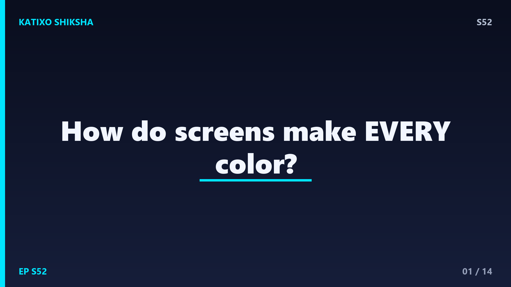
Slide 1दोस्तों, अभी तुम जिस screen को देख रहे हो, उस पर लाखों रंग चमक रहे हैं... लाल, हरा, नीला, पीला, सफेद, हर shade! पर रुको ज़रा... क्या तुमने कभी सोचा कि एक छोटी सी screen इतने सारे colors बनाती कैसे है? कोई painter तो बैठा नहीं है अंदर! आज Katixo Shiksha पर हम screens का वो जादुई secret खोलेंगे, जहाँ सिर्फ तीन रंगों से पूरी दुनिया के colors बन जाते हैं। तैयार हो? चलो इस rainbow machine के अंदर झाँकते हैं और देखते हैं असली science!
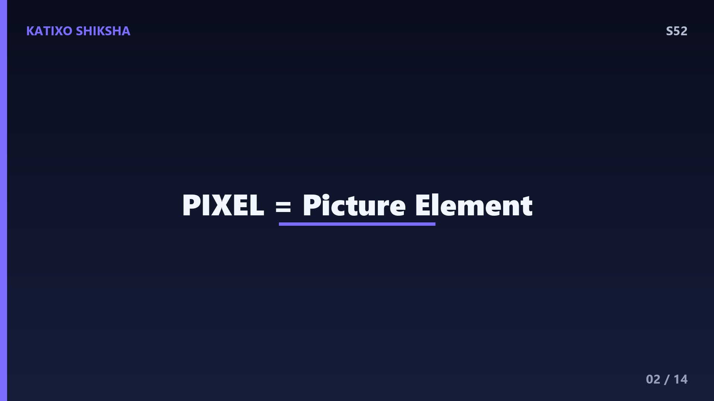
Slide 2सबसे पहले समझो pixel क्या होता है। तुम्हारी screen लाखों tiny dots से बनी है, और हर एक dot को कहते हैं pixel, यानी picture element. एक normal Full HD screen में 1920 cross 1080 pixels होते हैं, मतलब लगभग 2 million pixels, यानी बीस लाख छोटे-छोटे बिंदु! हर pixel अकेले एक रंग दिखाता है, और मिलकर ये सब एक पूरी तस्वीर बनाते हैं। ये बिल्कुल वैसा है जैसे मोज़ेक art में हज़ारों छोटे tiles मिलकर एक बड़ी picture बनाते हैं। तो screen की हर image असल में बीस लाख रंगीन बिंदुओं का खेल है, दोस्तों!
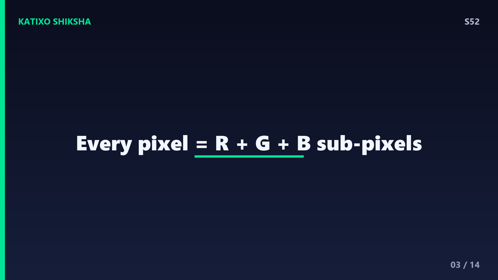
Slide 3अब असली twist! हर pixel खुद तीन और भी छोटे हिस्सों से बना होता है, जिन्हें कहते हैं sub-pixels. और कमाल की बात, ये तीन sub-pixels होते हैं लाल, हरा और नीला, यानी Red, Green और Blue. अगर तुम screen पर बहुत बड़ा magnifying glass रखो या पानी की एक बूँद डालो, तो तुम्हें हर pixel के अंदर ये तीन रंगीन lines या dots साफ दिख जाएँगे! इन्हीं तीन colors से screen हर रंग बनाती है। इसीलिए इस पूरे system को कहते हैं RGB. ये तीन ही screen के असली रंग के जादूगर हैं, बाकी सब इन्हीं का mix है।
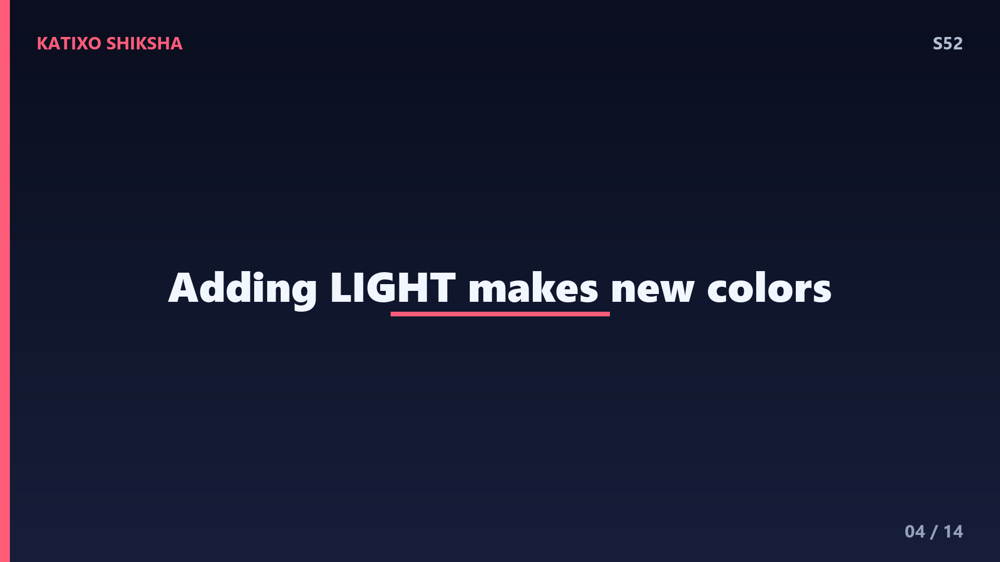
Slide 4अब सवाल ये कि सिर्फ तीन रंगों से इतने सारे colors कैसे? इसका जवाब है additive color mixing, यानी रोशनी को जोड़ना। screen खुद light पैदा करती है, और जब तुम अलग-अलग रंग की रोशनी मिलाते हो, तो वो जुड़कर नए colors बनाते हैं। red और green light मिलाओ, तो मिलता है yellow! यकीन नहीं होता ना? पर रोशनी की दुनिया में red plus green सच में yellow देता है। green plus blue मिलाओ तो cyan, और blue plus red मिलाओ तो magenta. रोशनी जोड़ने का ये खेल ही screen का असली दिमाग है, दोस्तों।
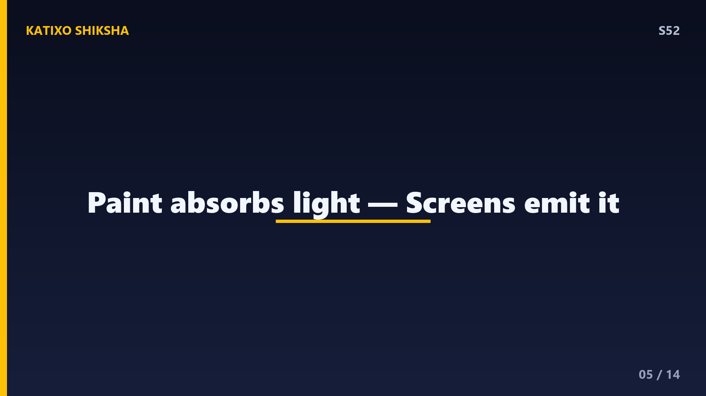
Slide 5यहाँ तुम्हारे मन में सवाल आएगा, अरे school में तो हमें सिखाया था कि primary colors red, yellow और blue होते हैं! फिर screen में yellow कहाँ गया? बात ये है दोस्तों, paint और light के नियम अलग हैं। जब तुम रंग या paint मिलाते हो, वो light को सोखते हैं, इसे कहते हैं subtractive mixing, और वहाँ red, yellow, blue काम करते हैं। पर screen रोशनी बनाती है, सोखती नहीं! रोशनी जोड़ने में red, green, blue ही primary हैं। इसीलिए screen RGB use करती है, RYB नहीं। एक है paint का खेल, दूसरा है light का!
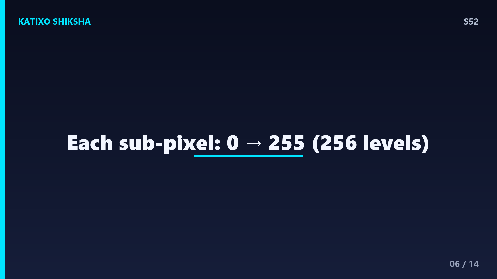
Slide 6अब रंगों के अलावा brightness का जादू समझो। हर sub-pixel सिर्फ on या off नहीं होता, उसकी चमक को control किया जा सकता है। computer हर sub-pixel की brightness को 0 से 255 तक के numbers में नापता है। 0 मतलब बिल्कुल बंद, अँधेरा, और 255 मतलब full brightness, सबसे तेज़! इसका मतलब हर रंग के 256 अलग-अलग levels होते हैं। थोड़ा सा red, बहुत सारा green, मध्यम blue, इन्हें mix करके हर pixel अनगिनत shades बना सकता है। ये बिल्कुल वैसा है जैसे तीन volume knobs, जिन्हें घुमा-घुमाकर तुम perfect रंग tune करते हो!
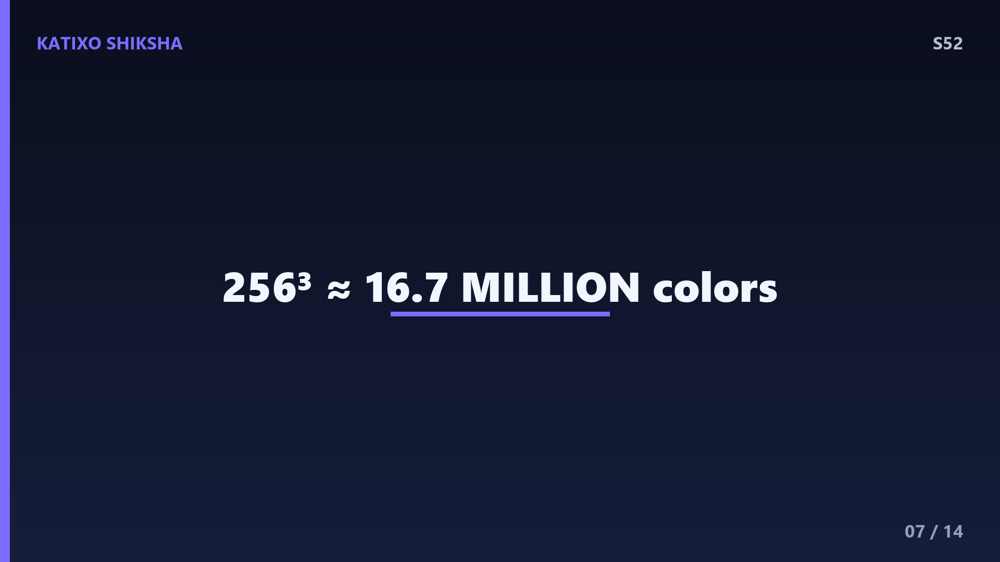
Slide 7अब थोड़ा सा maths का मज़ा, घबराओ मत, easy है! हर sub-pixel के 256 levels हैं, और तीन sub-pixels हैं, red, green, blue. तो total combinations निकालने के लिए 256 को तीन बार गुणा करो, यानी 256 into 256 into 256. इसका जवाब आता है लगभग 1 करोड़ 67 लाख, यानी 16.7 million colors! जी हाँ दोस्तों, सिर्फ तीन sub-pixels और उनकी brightness मिलाकर screen एक करोड़ 67 लाख से ज़्यादा रंग बना सकती है। इतने रंग कि इंसानी आँख भी सारे अलग-अलग पहचान नहीं पाती। यही है RGB की असली ताकत!
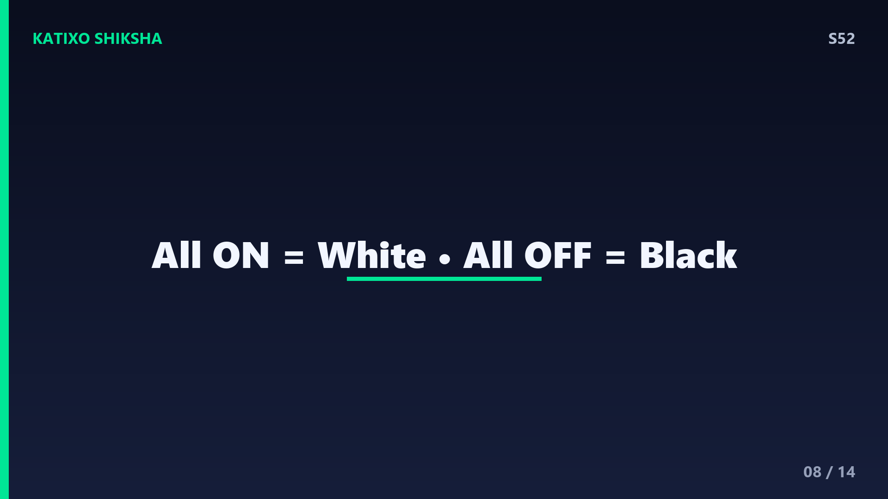
Slide 8अब दो खास colors की बात, सफेद और काला, जो screen में सबसे interesting हैं। जब तीनों sub-pixels, red, green और blue, तीनों full brightness यानी 255 पर on होते हैं, तो तीनों की रोशनी मिलकर बनाती है pure white, सफेद! रोशनी की दुनिया में सारे रंग जुड़कर white बनते हैं। और इसका उल्टा, जब तीनों sub-pixels बिल्कुल off यानी 0 पर होते हैं, कोई रोशनी नहीं निकलती, तो वो pixel दिखता है काला, black. तो याद रखो, screen पर white मतलब सब कुछ on, और black मतलब सब कुछ off. simple पर genius!
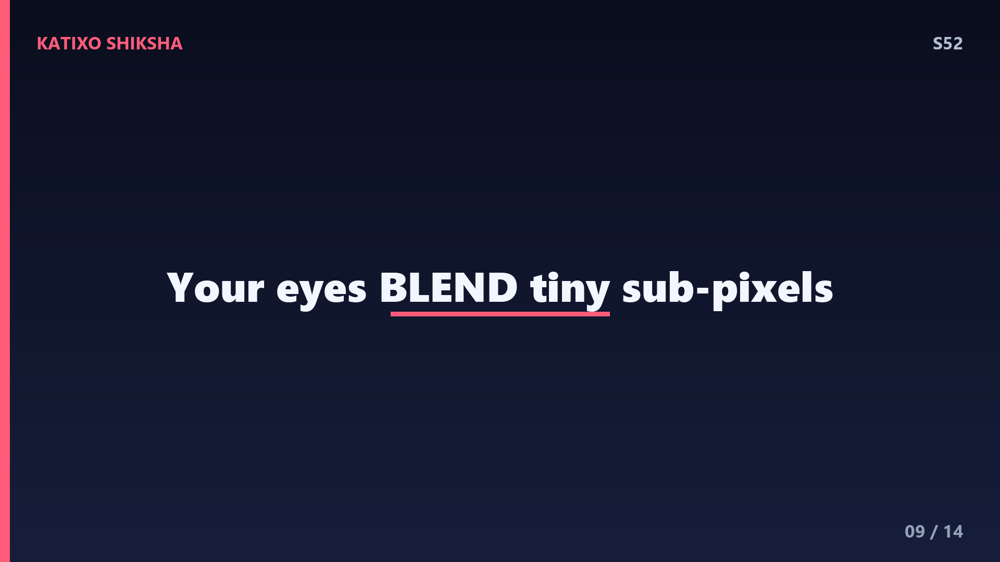
Slide 9अब तुम सोचोगे, अगर हर pixel में अलग-अलग red, green, blue dots हैं, तो हमें वो अलग क्यों नहीं दिखते? यहाँ काम करती है तुम्हारी आँख! sub-pixels इतने tiny और इतने पास-पास होते हैं कि दूर से तुम्हारी आँख उन्हें अलग पहचान ही नहीं पाती, वो उन्हें blend करके एक ही रंग बना देती है। इसे नापते हैं PPI से, pixels per inch, यानी एक inch में कितने pixels. phone screens में अक्सर 400 से ज़्यादा PPI होता है! इतनी density पर dots गायब हो जाते हैं और दिखती है एकदम smooth, perfect तस्वीर।
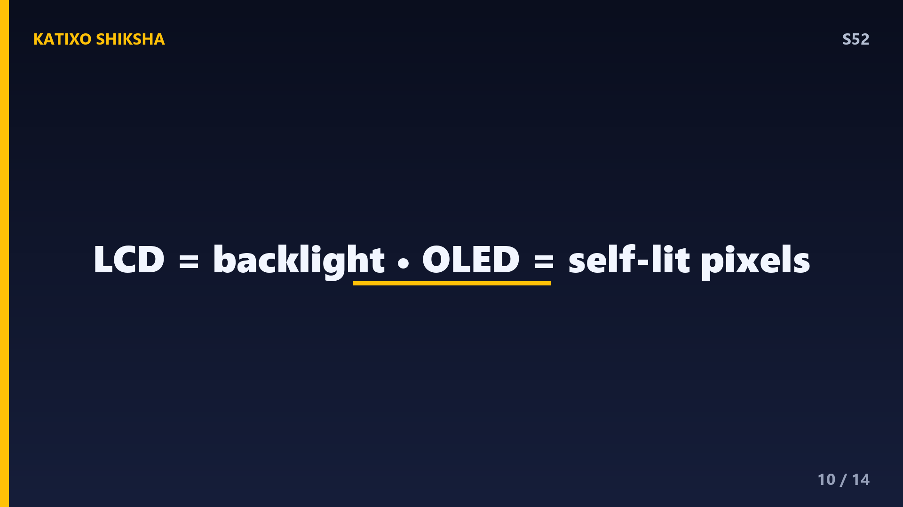
Slide 10अब screen बनाने की दो बड़ी technologies जानो, LCD और OLED. LCD screen में पीछे एक हमेशा जलती हुई backlight होती है, एक बड़ी सफेद रोशनी, और pixels उस रोशनी को रंगीन filters से छानकर colors दिखाते हैं। पर इसमें दिक्कत ये कि सच्चा काला मुश्किल है, क्योंकि backlight तो हमेशा जलती रहती है। दूसरी ओर OLED screen में हर pixel खुद अपनी रोशनी बनाता है, self-emitting! जब काला चाहिए, वो pixel पूरी तरह बंद हो जाता है, बिल्कुल pure black. इसीलिए OLED screens के colors ज़्यादा गहरे और काला ज़्यादा perfect दिखता है, दोस्तों।
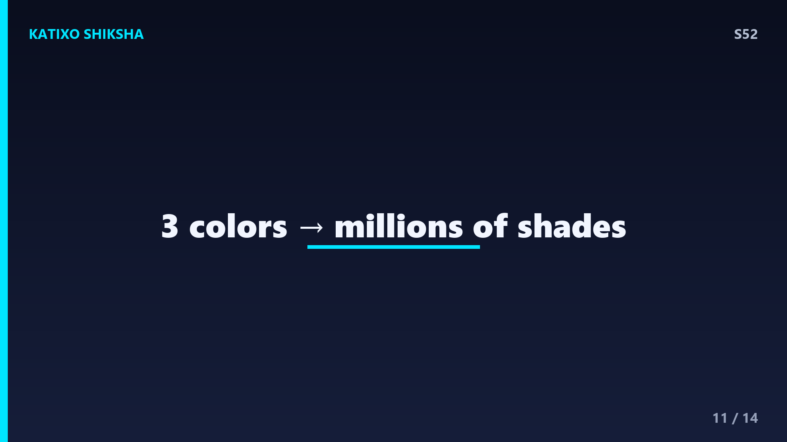
Slide 11तो अब पूरी कहानी जोड़ो! तुम्हारे phone में लगभग बीस लाख pixels हैं, हर pixel में तीन sub-pixels, red, green, blue. हर sub-pixel की brightness 0 से 255 तक adjust होती है, जिससे बनते हैं 16.7 million colors. तीनों on मतलब white, तीनों off मतलब black, red plus green मतलब yellow. तुम्हारी आँख इन tiny dots को दूर से blend करके smooth picture बना देती है। यानी जब तुम सूरज, समुंदर या किसी का चेहरा screen पर देखते हो, वो असल में सिर्फ तीन रंगों की रोशनी का perfectly tuned dance है। है ना mind-blowing?
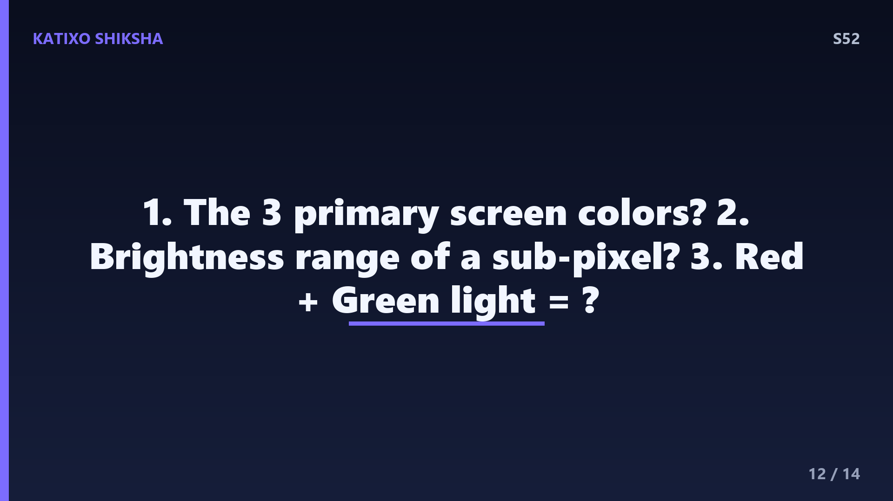
Slide 12Quick brain check! दोस्तों, अब देखते हैं तुमने कितना समझा। तीन सवाल, और हर एक का जवाब सोचने के लिए video को pause कर देना! पहला सवाल, screen के तीन primary colors कौन से होते हैं? दूसरा सवाल, हर sub-pixel की brightness किन numbers की range में होती है, यानी कितने से कितने तक? और तीसरा सवाल, जब red और green light मिलती है, तो कौन सा रंग बनता है? चलो, थोड़ा दिमाग लगाओ! video को अभी pause करो, तीनों जवाब अपने मन में पक्के करो, और फिर play दबाकर अपने answers check करो!
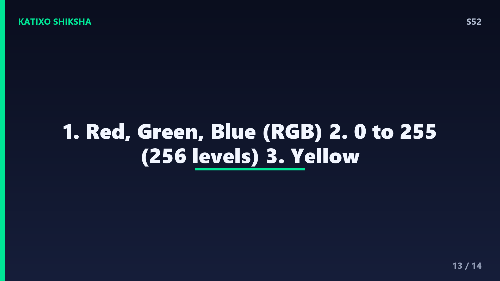
Slide 13चलो दोस्तों, अब जवाब मिलाते हैं! पहला, screen के तीन primary colors होते हैं red, green और blue, यानी RGB. अगर तुमने ये कहा, शाबाश! दूसरा, हर sub-pixel की brightness 0 से 255 तक की range में होती है, यानी कुल 256 levels. 0 मतलब बंद और 255 मतलब full bright. और तीसरा सवाल, red plus green light मिलकर बनाते हैं yellow, पीला रंग! light की दुनिया का सबसे मज़ेदार fact. कितने सही हुए तुम्हारे? अगर तीनों सही, तो तुम सच में screen science के expert बन गए हो!
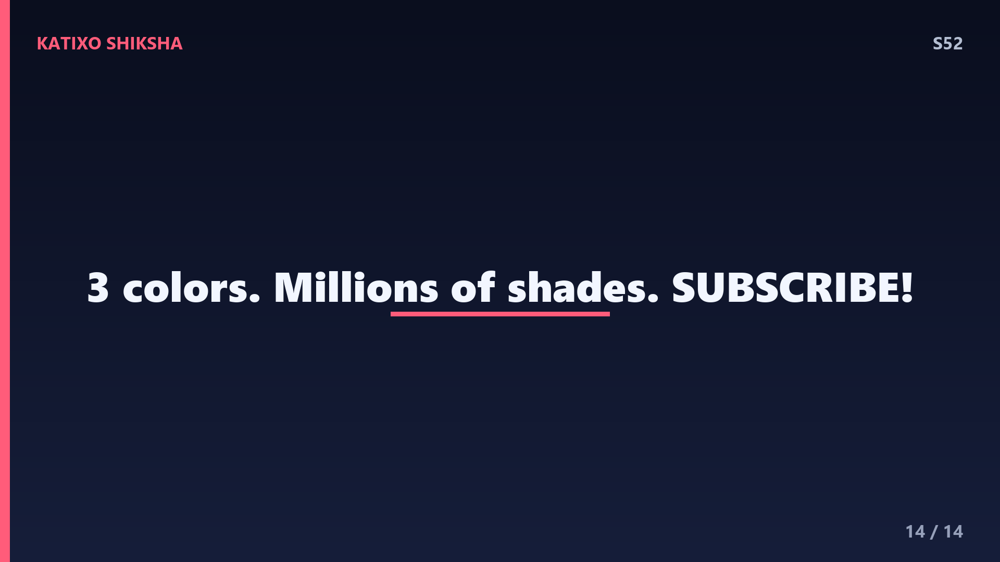
Slide 14तो दोस्तों, आज हमने सीखा कि screen कोई जादू नहीं, बल्कि शानदार science है! लाखों pixels, हर एक में red, green, blue sub-pixels, brightness 0 से 255, और इन सबसे बनते हैं 16.7 million colors. सब on मतलब white, सब off मतलब black, और तुम्हारी आँख इन्हें blend करके smooth picture बनाती है. LCD में backlight, OLED में हर pixel खुद रोशन! अगली बार screen देखो, तो याद करना ये तीन रंगों का कमाल. अगर मज़ा आया और कुछ नया सीखा, तो इस video को like करो, दोस्तों को share करो, और Subscribe करना मत भूलना! Bye!